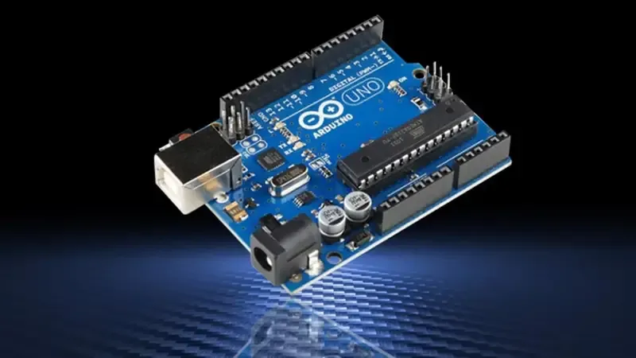

LED
Light Emitting Diode — emite luz ao receber corrente elétrica. Indicadores visuais básicos.
Saída digitalO Arduino é uma plataforma de prototipagem eletrônica de código aberto baseada em hardware e software fáceis de usar. Ele é a ponte perfeita entre a imaginação e a realidade.
O Arduino é uma plataforma de prototipagem eletrônica open-source que combina hardware acessível com um ambiente de programação simples. Ideal para estudantes, artistas, designers e qualquer pessoa curiosa sobre tecnologia — com poucos componentes e algumas linhas de código, você pode criar projetos que interagem com o mundo real.

Você escreve o código na Arduino IDE usando C/C++ simplificado.
A IDE converte seu código em instruções que o microcontrolador entende.
O código compilado é carregado para a memória flash do Arduino via USB.
O Arduino roda o código de forma autônoma — sem computador conectado.
Massimo Banzi e sua equipe no Instituto de Design de Interação de Ivrea, Itália, começam o projeto para criar uma placa acessível a estudantes.
A primeira placa Arduino é lançada. O nome vem do Bar di Re Arduino, bar frequentado pela equipe em Ivrea.
O modelo que consolidou o Arduino como padrão mundial de prototipagem, com o microcontrolador ATmega328P.
Lançamento do Arduino Uno R1 — até hoje o modelo mais reconhecido e utilizado no mundo.
Mais de 10 milhões de placas vendidas, comunidade de milhões de makers, educators e engenheiros em todo o mundo.
O Arduino usa uma versão simplificada de C/C++. Todo sketch (programa) possui obrigatoriamente duas funções:
setup()loop()// Define o pino do LED
int led = 13;
void setup() {
// Configura o pino como saída
pinMode(led, OUTPUT);
}
void loop() {
digitalWrite(led, HIGH); // Liga
delay(1000); // Aguarda 1s
digitalWrite(led, LOW); // Desliga
delay(1000); // Aguarda 1s
}Cada projeto combina componentes eletrônicos físicos. Conheça os mais presentes neste portfólio:
Light Emitting Diode — emite luz ao receber corrente elétrica. Indicadores visuais básicos.
Saída digitalTransduz sinais elétricos em som. Gera tons de frequências variáveis com a função
tone().
Limita a corrente elétrica. Essencial para proteger LEDs e outros componentes de sobretensão.
PassivoMotor de posicionamento preciso. Controlado pela biblioteca Servo.h, move de 0°
a 180°.
Lê temperatura ambiente via entrada analógica. Converte tensão em graus Celsius via fórmula.
Entrada analógicaMede distância por eco de ondas sonoras. Usa pinos TRIG e ECHO com pulseIn().
Veja o projeto PISCANTE.ino rodando no navegador. Clique em "Iniciar" para ligar o circuito.
Modelos como o Arduino MKR e Nano 33 IoT têm Wi-Fi e Bluetooth integrados, conectando objetos físicos à internet com facilidade.
Com o TensorFlow Lite para Microcontroladores, é possível rodar modelos de IA diretamente no Arduino Nano 33 BLE Sense — sem nuvem.
A família Arduino Pro é voltada para ambientes industriais, com suporte a protocolos como RS485, Modbus e conectividade 4G/LTE.
O Arduino Education equipa escolas com kits e currículos oficiais em mais de 100 países, formando a próxima geração de engenheiros.
Olá! Sou Roberto Átila, estudante de Técnico em Informática para Internet. Apaixonado por eletrônica, desenvolvimento de sistemas e por construir coisas que o mundo físico pode sentir. Este portfólio reúne meus experimentos com Arduino — cada projeto foi montado, testado e documentado por mim.